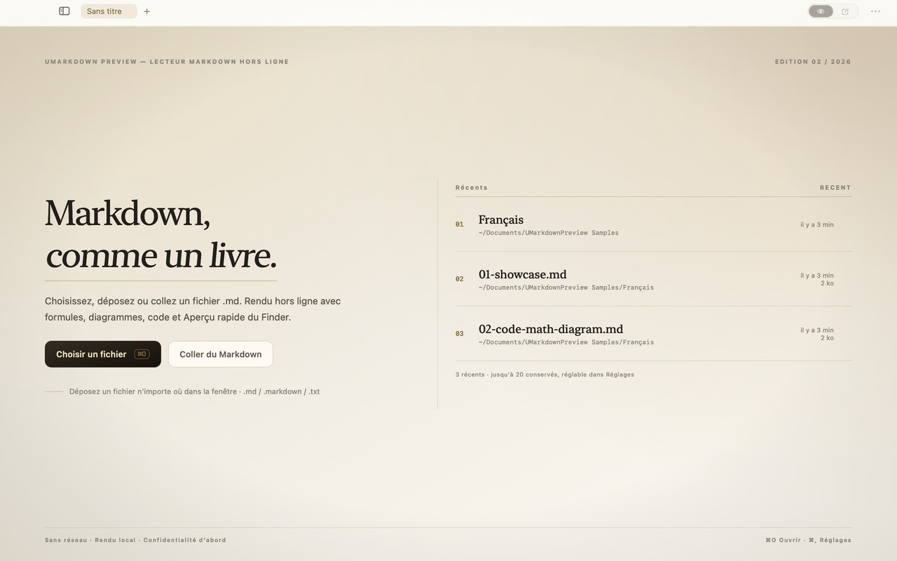
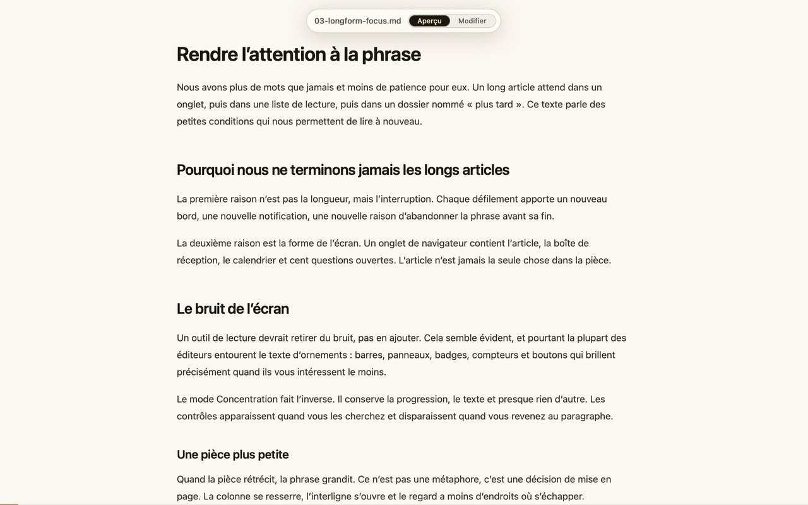
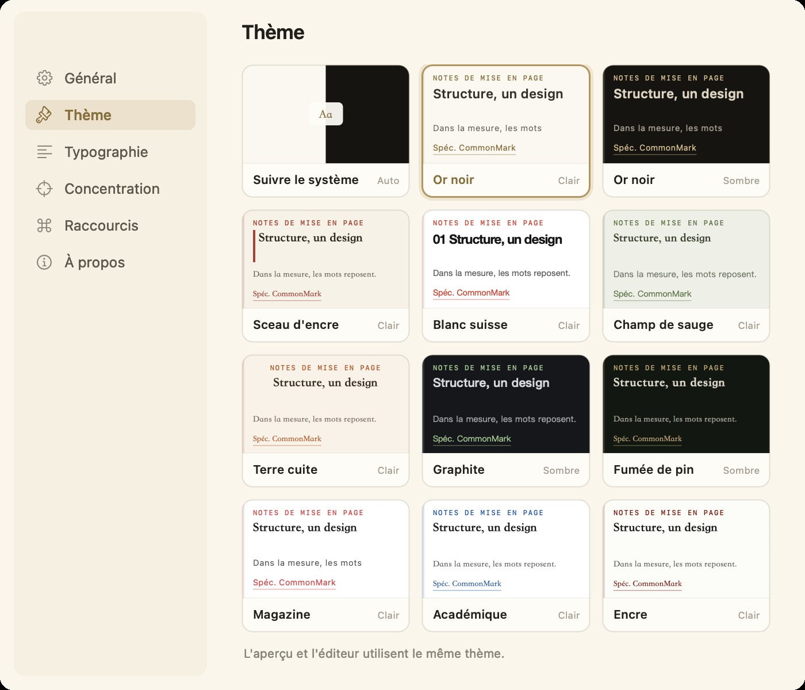
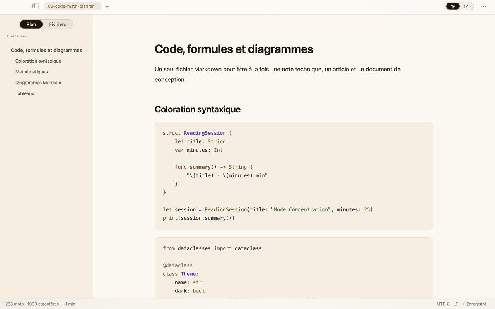
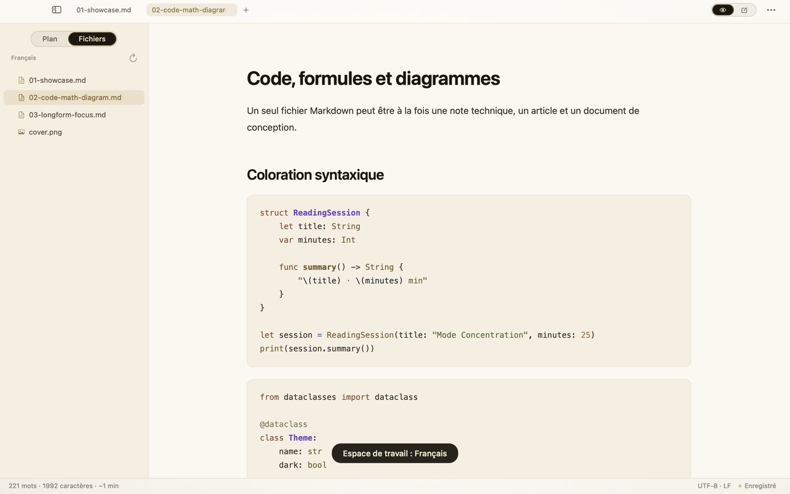

Lecteur Markdown hors ligne · macOS
Markdown,comme un livre.
Un lecteur et éditeur Markdown natif et silencieux pour macOS. Design noir et or, douze thèmes, espaces de dossier, formules et diagrammes, et un espace de lecture qui ne vous dérange pas.

01 — Lire
Un espace de lecture plus silencieux.
La fenêtre s'efface. Restent le texte, un plan clair et une ligne dorée qui indique où vous en êtes.
- 01
Mode Concentration
Appuyez sur ⌘⇧F et la fenêtre se réduit au paragraphe. Une capsule de progression reste en haut ; les contrôles n'apparaissent que lorsque vous les cherchez.
- 02
Douze thèmes
Suivez le système ou choisissez Noir et or clair/sombre, Sceau d'encre, Blanc suisse, Champ de sauge, Terracotta, Graphite, Fumée de pin, Magazine, Académique ou Encre.
- 03
Typographie native
Papier chaud, plan configurable et texte net sur les écrans Retina et 1×.

Thèmes
Un document. Douze façons de le voir.
L'aperçu et l'éditeur partagent le même thème. Changez-le une fois et tout l'espace de lecture suit.

02 — Écrire
Gardez l'attention dans la phrase.
Éditer ne devrait pas ressembler à piloter une machine. L'éditeur s'efface : mode machine à écrire, enregistrement automatique et coloration identique à l'aperçu.
- 01
Mode machine à écrire
Le curseur reste près du centre de l'écran, pour que les longs documents ne tirent pas votre regard vers le bas.
- 02
Enregistrement automatique
Une seconde après la dernière frappe, le fichier s'écrit discrètement.
- 03
Coloration dans l'éditeur
Les blocs de code sont colorés aussi dans l'éditeur, y compris dans les citations et les listes imbriquées.

03 — Travail
Un espace de travail qui en est enfin un.
Ouvrez un dossier, pas seulement un fichier. La barre latérale se charge par niveaux, les onglets gardent plusieurs documents à portée, et la palette trouve tout en quelques touches.
- 01
Espaces de dossier
Arborescences à chargement différé, renommage en ligne, révéler dans le Finder et ouvrir le Terminal ici.
- 02
Onglets et restauration
Quittez et rouvrez ; fenêtres et onglets reviennent à leur place.
- 03
Ouverture rapide
Appuyez sur ⌘⇧P pour la palette de commandes avec recherche floue des fichiers et des actions.

05 — Confidentialité
Privé par conception.
Tout est rendu sur votre Mac. Aucun compte, aucune analyse, aucun suivi. L'app ne fait aucune requête réseau et ne collecte aucune donnée.
Lire la politique de confidentialitéOuvrez un fichier. Commencez à lire.
UMarkdownPreview 2.0 est disponible sur le Mac App Store.
Télécharger sur le Mac App Store